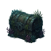

Item Catalogue
Find where items and pets come from: monster drops, stolen loot, skill recipes, containers and shops. All rates are shown without bonuses.

Items & Pets
—
Base Rates, Clear Requirements
Monster chances are per kill and combine all equipment rarities. Listed quantities are active/background drop ranges; cold-offline combat uses the floored midpoint, shown separately when different. No VIP, luck, bestiary, community, weather or pet bonuses are included.
Gear stats can be previewed at each available rarity using the rarity selector. Guaranteed minimum rarities are noted on their sources. Set bonuses and linked set pieces appear separately; the stat preview excludes character and set bonuses and does not change the base drop rates.
Thieving loot chances are per successful steal. At the required level, the base success chance is 50%; it rises by 4.5 percentage points per extra Thieving level to a 95% cap. Gathering and production list their required skill level and output per completed action. Recipe ingredients are requirements, not sources of those ingredients. Skill-pet awards use eligible skill time, not kills.
Container percentages mean at least one of the selected item per opening. Conditional pet ownership checks and event availability are shown. Boss reward chests depend on contribution and eligibility; use Gathering Bosses for that system.
The catalogue includes monster loot and combat pets, gathering and rare containers, Cooking, Smithing, Crafting, Alchemy, Arcane Arts production, Thieving, skill pets, chest contents, tool/pet shops and event-shop tables. Not yet indexed: quest rewards and rune unlocks, other general-shop stock, passive event currencies, equipment/pet bonus products and special one-off rewards. A missing source does not mean an item is unobtainable.
Extracted from isolated tables in the bundled source, without running the game. Combat rows are also checked against the supplied CSV datasets. Everything runs locally; no account or saved loadout is needed.